Mục đích
My Sales Dashboard là trang theo dõi pipeline của chính bạn: chỉ tiêu bán hàng, khách hàng, cơ hội, deal sắp chốt, cơ sở y tế theo khu vực, và danh sách cơ hội theo ngày dự kiến chốt.
Mọi khối trên trang dùng cùng một bộ lọc sau khi bạn nhấn Apply. Trang này không phải báo cáo cả team — báo cáo team nằm ở Management Dashboard.
Trước khi bắt đầu
- Bạn đã đăng nhập ERP
- Tài khoản có vai trò iMED Sales, iMED Sales Manager hoặc iMED Sales Admin
- Cơ hội được gán cho bạn (chủ sở hữu, đồng phụ trách, hoặc Assign To)
- Muốn thấy chỉ tiêu: quản lý đã khai báo target trên hồ sơ Sales Person của bạn
Các bước thực hiện
Bước 1: Mở My Sales Dashboard
Trên thanh tìm kiếm Desk, gõ My Sales Dashboard. Hoặc vào workspace CRM và chọn shortcut My Dashboard.
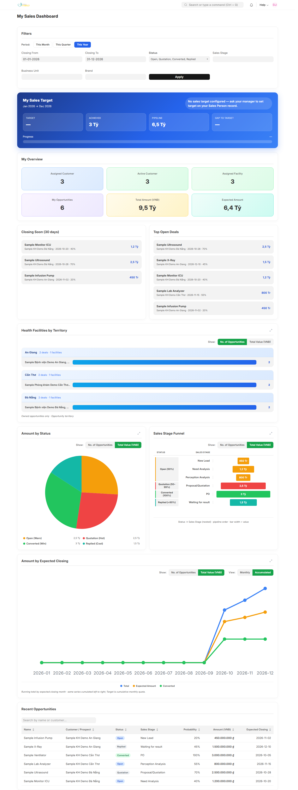
Bước 2: Xem bộ lọc
Khối Filters nằm trên cùng. Chọn điều kiện trước, rồi nhấn Apply để cả trang cập nhật.
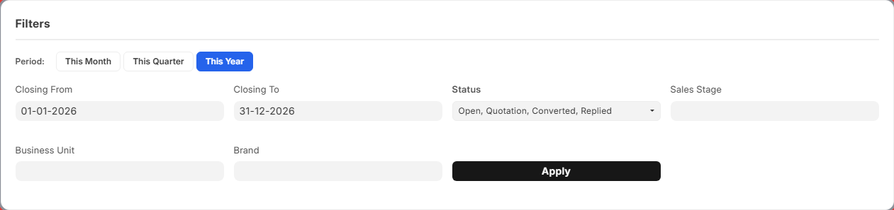
| Thành phần | Cách dùng |
|---|---|
| This Month / This Quarter / This Year | Điền nhanh Closing From và Closing To. Chưa làm mới số liệu cho đến khi nhấn Apply. |
| Closing From / Closing To | Lọc theo ngày dự kiến chốt. Sửa tay một trong hai ô sẽ tắt nút kỳ đang sáng nếu khoảng ngày không còn khớp Tháng / Quý / Năm. |
| Status | Mặc định: Open, Quotation, Converted, Replied. Để trống một ô lọc nghĩa là lấy tất cả giá trị của ô đó. |
| Sales Stage | Giai đoạn bán hàng iMED. Để trống = mọi giai đoạn. |
| Business Unit / Brand | Lọc theo đơn vị kinh doanh và thương hiệu trên dòng hàng của cơ hội. |
| Apply | Làm mới chỉ tiêu, KPI, danh sách deal, biểu đồ và bảng cơ hội theo cùng một bộ lọc. |
Bước 3: Chọn kỳ
Nhấn This Month, This Quarter hoặc This Year. Ví dụ dưới đây chọn This Quarter — hai ô ngày đổi thành đầu quý và cuối quý (01-10-2026 đến 31-12-2026).
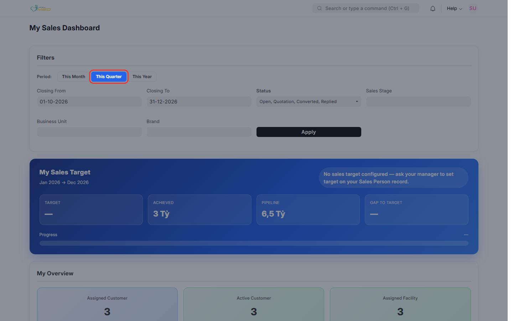
Bước 4: Nhấn Apply
Nhấn Apply và đợi trang tải xong. Dòng phụ dưới My Sales Target đổi theo khoảng ngày vừa chọn (ví dụ Oct 2026 → Dec 2026).
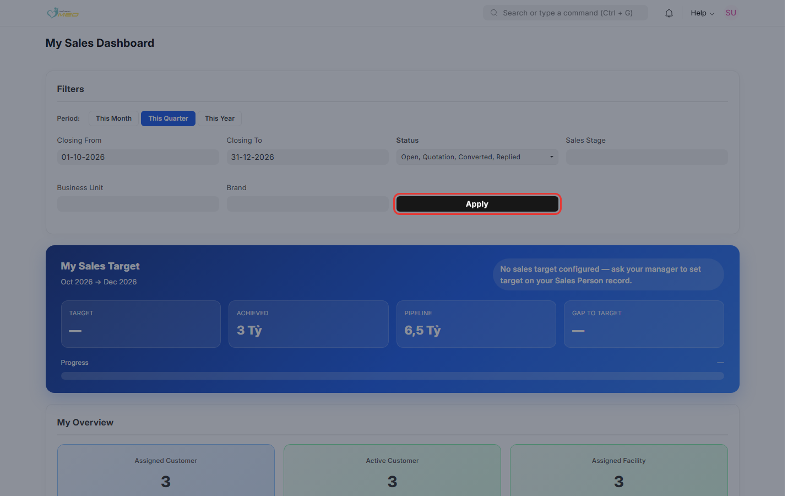
Bước 5: Đọc My Sales Target
Khối xanh cho biết bạn đang ở đâu so với chỉ tiêu trong khoảng ngày đã lọc. Di chuột lên từng ô để xem định nghĩa.
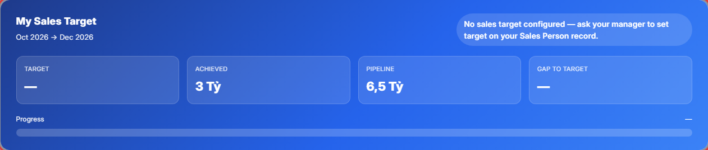
| Chỉ số | Ý nghĩa |
|---|---|
| Target | Chỉ tiêu VNĐ được chia theo tháng, trùng với khoảng ngày đang lọc |
| Achieved | Tổng giá trị cơ hội đã chuyển đổi / thắng trong tập đã lọc |
| Pipeline | Tổng giá trị cơ hội đang mở (Open, Quotation, Replied). Không gồm Converted, Lost, Closed |
| Gap to Target | Target trừ Achieved; nhỏ nhất là 0 |
| Progress | Achieved chia Target |
Bước 6: Đọc My Overview
Sáu thẻ tóm tắt. Bốn thẻ đầu mở danh sách khi nhấn: Assigned Customer, Active Customer, Assigned Facility, My Opportunities.
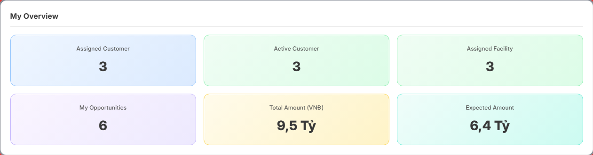
| Thẻ | Ý nghĩa | Theo bộ lọc? |
|---|---|---|
| Assigned Customer | Khách hàng mà bạn là Account Manager | Không |
| Active Customer | Số khách hàng phân biệt trên các cơ hội đã lọc. Một khách nhiều deal chỉ tính một lần | Có |
| Assigned Facility | Cơ sở y tế mà bạn là Assigned User hoặc Co-assigned To | Không |
| My Opportunities | Số cơ hội của bạn trong bộ lọc và khoảng ngày chốt | Có |
| Total Amount (VNĐ) | Tổng giá trị cơ hội đã lọc | Có |
| Expected Amount | Tổng giá trị × xác suất ÷ 100 | Có |
Bước 7: Xem deal cần chú ý
Hai danh sách ngắn, tối đa 5 dòng, cùng tuân theo bộ lọc. Nhấn một dòng để mở cơ hội.
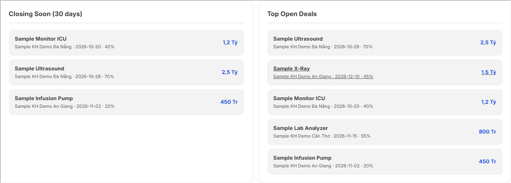
| Danh sách | Gồm những deal nào |
|---|---|
| Closing Soon (30 days) | Cơ hội đang mở (Open, Quotation, Replied), ngày chốt từ hôm nay đến 30 ngày tới, sắp theo ngày chốt gần nhất |
| Top Open Deals | Cơ hội đang mở, sắp theo giá trị giảm dần |
Không có dòng phù hợp thì hiện No deals to show.
Bước 8: Health Facilities by Territory
Cơ hội bạn sở hữu, nhóm theo khu vực rồi theo cơ sở y tế. Chuyển No. of Opportunities (mặc định) hoặc Total Value (VNĐ). Nhấn biểu tượng góc phải để xem toàn màn hình.
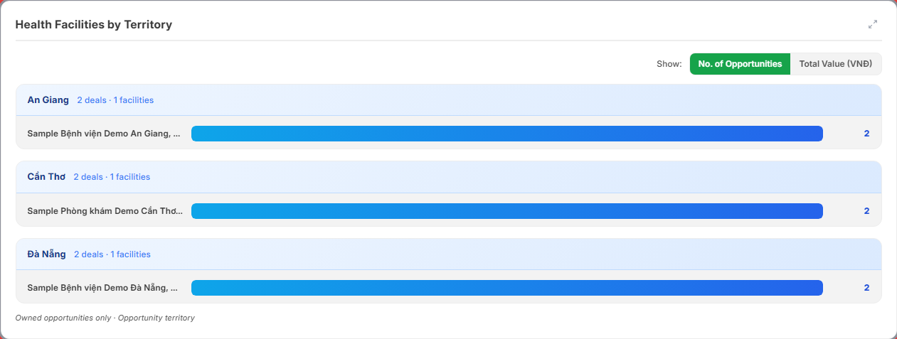
Bước 9: Amount by Status
Biểu đồ tròn theo trạng thái. Mặc định là Total Value (VNĐ). Chuyển No. of Opportunities để xem số lượng.
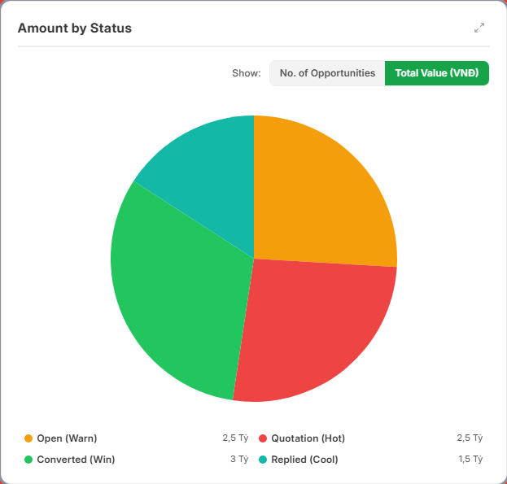
Khi có dữ liệu, chú giải dùng các nhãn:
| Trạng thái | Nhãn trên chú giải |
|---|---|
| Open | Open (Warn) |
| Quotation | Quotation (Hot) |
| Converted | Converted (Win) |
| Replied | Replied (Cool) |
| Closed | Closed (Cold) |
| Lost | Lost |
Bước 10: Sales Stage Funnel
Funnel lồng trạng thái và giai đoạn bán hàng iMED — số cơ hội đang đứng ở từng giai đoạn, không phải lịch sử chuyển giai đoạn. Cùng hai nút đếm / giá trị; mặc định Total Value (VNĐ).
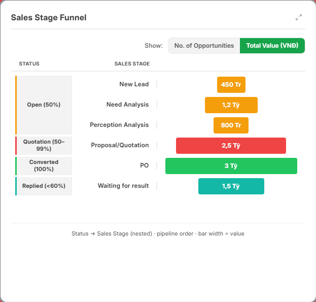
Giai đoạn không có số liệu được ẩn. Cột trạng thái nhóm các giai đoạn: Open, Quotation, Converted, Replied, Closed, Lost.
Bước 11: Amount by Expected Closing
Biểu đồ theo tháng chốt trong khoảng ngày đã lọc.
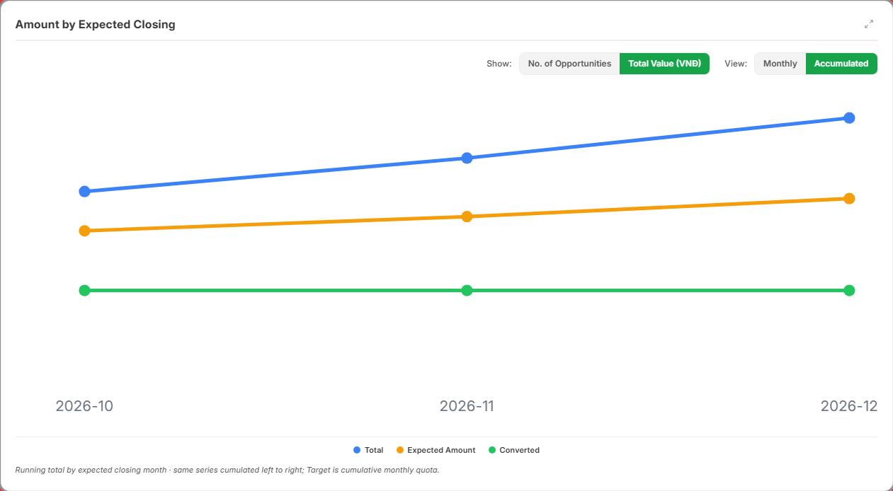
| Nút | Tác dụng |
|---|---|
| No. of Opportunities / Total Value (VNĐ) | Đếm số cơ hội hoặc xem giá trị. Mặc định là giá trị. |
| Monthly / Accumulated | Từng tháng, hoặc cộng dồn từ trái sang phải. Mặc định là cộng dồn. |
Chú giải: Total, Expected Amount (theo xác suất), Converted. Khi hồ sơ có chỉ tiêu, thêm đường Target (quota cộng dồn theo tháng).
Bước 12: Tìm trong Recent Opportunities
Bảng liệt kê cơ hội khớp bộ lọc. Gõ vào ô Search by name or customer... để lọc theo tên cơ hội hoặc khách hàng. Nhấn tiêu đề cột để sắp xếp.
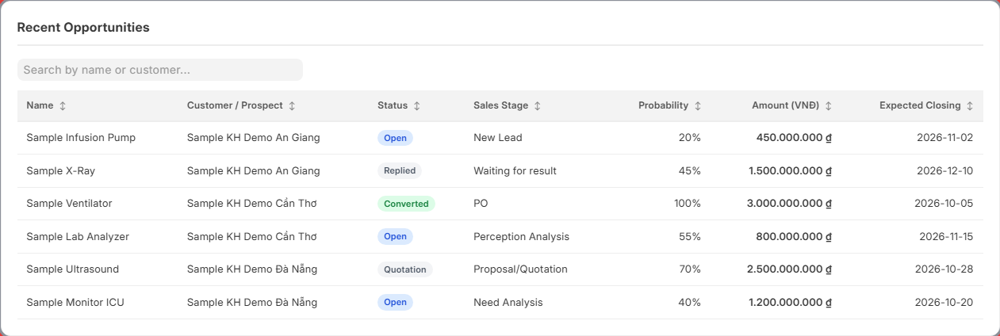
| Cột | Nội dung |
|---|---|
| Name | Tên cơ hội — nhấn để mở phiếu |
| Customer / Prospect | Khách hàng hoặc đầu mối |
| Status / Sales Stage | Trạng thái và giai đoạn bán hàng |
| Probability | Xác suất |
| Amount (VNĐ) | Giá trị cơ hội |
| Expected Closing | Ngày dự kiến chốt |
Không có cơ hội khớp bộ lọc: No opportunities match the current filters. Ô tìm không ra dòng: thông báo riêng cho kết quả tìm kiếm.
Kết quả mong đợi
Sau khi nhấn Apply:
- Chỉ tiêu, KPI theo bộ lọc, hai danh sách deal, các biểu đồ và bảng cơ hội cùng một tập dữ liệu
- Dòng phụ My Sales Target khớp Closing From – Closing To
- Không còn số của lần lọc trước
- Không có cơ hội: KPI liên quan = 0; biểu đồ hiện No data hoặc No data available; bảng hiện No opportunities match the current filters.
Assigned Customer và Assigned Facility giữ nguyên khi đổi bộ lọc — đó là danh sách gán cho bạn, không phải kết quả lọc cơ hội.
Xử lý sự cố thường gặp
| Triệu chứng | Nguyên nhân có thể | Cách xử lý |
|---|---|---|
| Không mở được trang | Tài khoản không có vai trò kinh doanh | Nhờ quản trị gán iMED Sales (hoặc Manager / Admin) |
| Đổi kỳ hoặc bộ lọc mà số không đổi | Chưa nhấn Apply | Nhấn Apply và đợi tải xong |
| Không thấy deal Lost hoặc Closed | Status mặc định không gồm hai trạng thái này | Thêm Lost / Closed vào Status, rồi Apply |
| Assigned Customer hoặc Assigned Facility không đổi sau Apply | Hai thẻ này không theo bộ lọc dashboard | Bình thường. Xem Active Customer và My Opportunities để đối chiếu bộ lọc |
| Target và Gap hiện dấu gạch | Chưa có target trên Sales Person | Nhờ quản lý khai báo chỉ tiêu |
| Mọi mục đều 0 hoặc No data | Không có cơ hội của bạn trong khoảng ngày và bộ lọc | Nới Closing From / Closing To, hoặc bỏ bớt Status, Sales Stage, Business Unit, Brand |
| Biểu đồ cơ sở y tế ít hơn các khối khác | Chỉ tính cơ hội bạn sở hữu | Bình thường — xem dòng Owned opportunities only |